Distributed image compression
Retrieval-Augmented Distributed Image Compression with Multi-Reference Side Information
School of Artificial Intelligence, Wuhan University of Technology
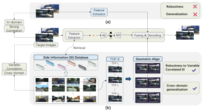
Distributed image compression
School of Artificial Intelligence, Wuhan University of Technology

Extremely low-bitrate distributed image compression (DIC) is crucial for bandwidth-constrained visual sensing and distributed cloud storage. At such low bitrates (<0.1 bpp), the transmitted representation retains little target information, making reconstruction particularly sensitive to the relevance and geometric consistency of the available side information (SI). Existing learning-based DIC methods are commonly developed with a pre-associated SI under matched training and evaluation distributions, whereas practical decoder-side visual collections may contain references with varying correlations to the target. To address these limitations, we propose RADIC, a retrieval-augmented DIC framework that replaces fixed paired SI with multiple references retrieved from a decoder-side visual gallery. Specifically, we construct a heterogeneous SI gallery and retrieve correlated references using the transmitted latent representation. To handle the geometric mismatch and varying relevance of retrieved references, we design a depth-aware geometric alignment module to align retrieved features through depth-guided coarse flow and residual refinement. A multi-reference cross-attention mechanism then selectively aggregates complementary information while suppressing irrelevant content. Moreover, decoder attention supervises an encoder-side importance map for SI-aware rate allocation. Trained exclusively on KITTI General, RADIC achieves superior perceptual compression performance across KITTI General, KITTI Stereo, Cityscapes, and InStereo2K, and remains robust under weakly correlated and cross-domain SI.
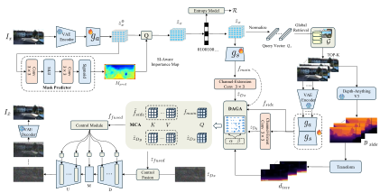
The decoded target latent queries a fixed decoder-side gallery for top-K candidate references.
DAGA combines depth-guided coarse correspondence with residual flow refinement.
MCA weighs complementary regions across multiple references and suppresses irrelevant content.
A two-step diffusion decoder produces the final reconstruction at extremely low bitrates.
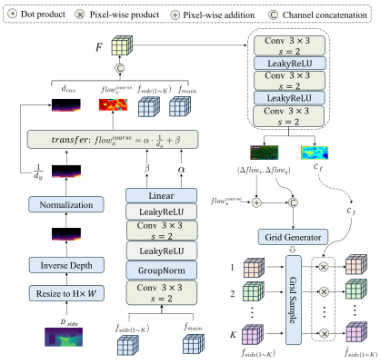
As SI correlation decreases from paired to non-paired and cross-domain conditions, NDSC and MDIC show larger structural and texture degradation, while RADIC preserves more target-consistent content.
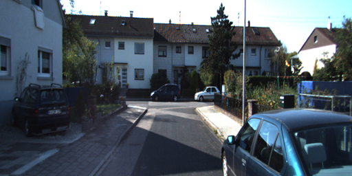
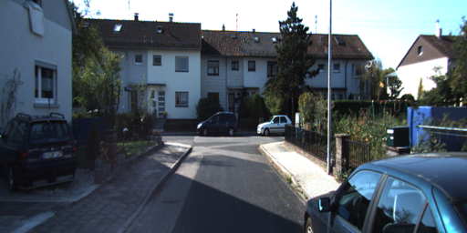
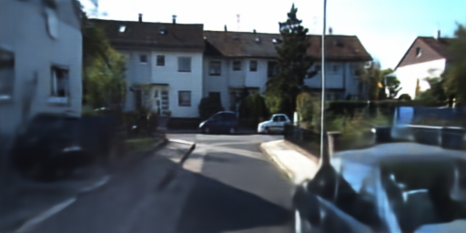
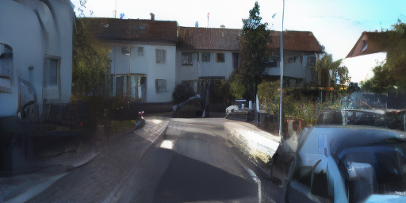
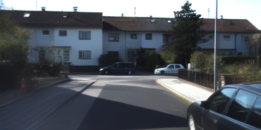
Reconstruction quality at comparable ultra-low bitrates on the three manuscript examples.
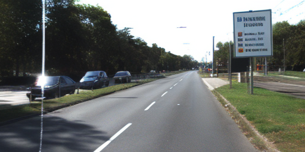
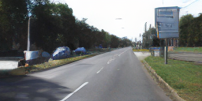

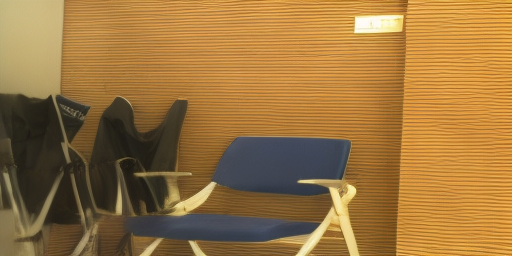
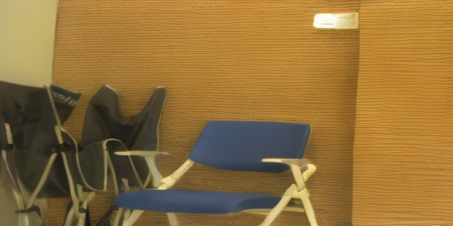
DAGA produces spatially varying sampling displacements and suppresses unreliable side-information regions before feature fusion.
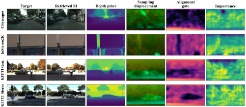
The learned displacement varies with scene depth and object layout rather than applying a uniform image shift.
The alignment gate is reduced around mismatched vehicles, boundaries, narrow gaps, and other regions that remain unreliable after warping.
Latent retention is stronger around detailed or weakly supported regions and lower over flat areas that can be recovered more reliably from SI.
Across Cityscapes, InStereo2K, KITTI General, and KITTI Stereo, the gate and retention maps play complementary roles: the decoder selectively accepts aligned SI, while the encoder preserves more target information where SI support is weak or uncertain.
Perceptual quality
RADIC is evaluated with LPIPS, FID, DISTS, KID, and NIQE across four datasets. Lower values indicate better perceptual reconstruction.
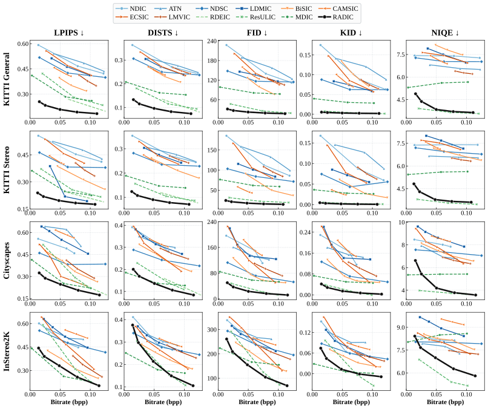
Pixel fidelity
PSNR and MS-SSIM complement perceptual metrics and expose the distortion-perception behavior at low bitrates.
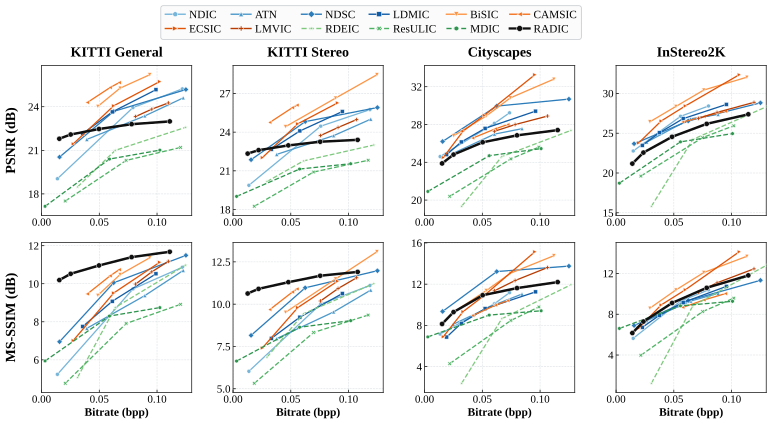
The first relevant reference provides most of the gain. Additional references help only when they contribute nonredundant target information.
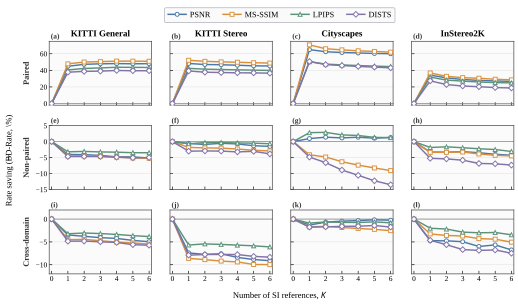
@article{xu2026radic,
title = {Retrieval-Augmented Distributed Image Compression
with Multi-Reference Side Information},
author = {Xu, Guojun and Xiang, Jianwen and Zhang, Mingyang
and Xie, Yaning and Zhou, Junwei},
year = {2026},
note = {Manuscript}
}